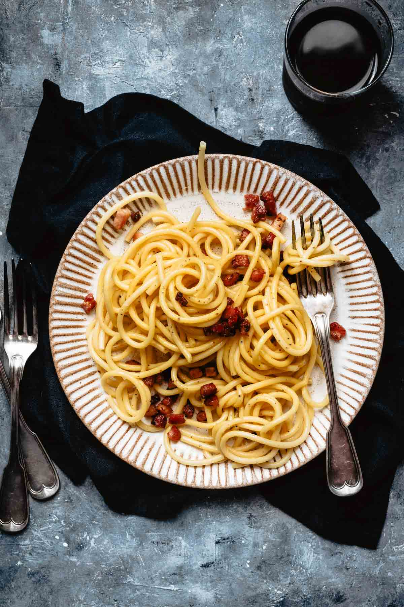

Spaghetti Carbonara

Description
Spaghetti carbonara, a pasta and sauce rich with Parmigiano-Reggiano cheese and guanciale, pancetta, or bacon, is a quick and easy dinner that takes just 25 minutes from stove to table. The creaminess comes from the proper cooking of the eggs with pasta cooking water so that it’s luscious, creamy, and addictive. This knock-it-out-of-the park spaghetti alla carbonara recipe calls for extra egg yolk, which lends an extra silken richness and lusciousness to the dish. If you want a traditional version, use 4 whole eggs. I’ve also seen Italian cooks use an extra large egg yolk per person, which is super luxurious. Whatever you do, please forgo cream, peas, garlic, etc. They are wonderful, they’re just not part of the classic recipe.
“Carbonara” comes from the Italian word carbonaro, which translates as “coal burner.” There’s a legend, which most believe to be apocryphal, that says the dish was created as an easy-to-make, stick-to-your-ribs meal men who were working outside all day long could make for themselves. The more widely accepted origin of the dish is that American soldiers during the Second World War brought their taste for bacon and eggs to Europe, and hence the dish was created to sate ally tastes.
Ingredients
- Extra Virgin Olive Oil, 1 tbs
- Pancetta, 6 oz. sliced into 1/4 inch cubes
- Kosher Salt, 2 tbs
- Dry Spaghetti, 1 lbs
- Large Eggs, 3 whole + 1 yolk
- Parmigiano-Reggiano, 3/4 cup grated
- Pecorino, 1/4 cup grated
- Black Pepper, fresh ground to taste
Steps
- Grab your largest skillet and place it over medium heat. Pour the olive oil into the skillet and wait until the oil ripples.
- Toss in the pancetta and cook, stirring often, until crisp. Slide the skillet off the heat.
- Meanwhile, bring 6 quarts of water to a boil in a large pot. Toss in the salt and the spaghetti and boil, stirring to keep the strands from sticking to one another, until al dente.
- Carefully scoop out 3/4 cup of the cooking pasta water and reserve it. Then drain the spaghetti in a colander, shaking it to release any excess liquid.
- Working quickly, dump the hot drained spaghetti into the skillet with the pancetta. Dribble a bit of the reserved cooking water into the beaten eggs and whisk quickly. This prevents the eggs from cooking.
- Immediately add the eggs and half the cheese to the skillet of spaghetti and toss well. Add just enough of the reserved pasta water to make the mixture lusciously creamy.
- TESTER TIP: Add the pasta water incrementally, tossing all the while you’re dribbling in the water, as everything magically coalesces into a velvety sauce that cloaks each strand.
- Sprinkle generously with pepper and serve at once. Pass the remaining cheese at the table.